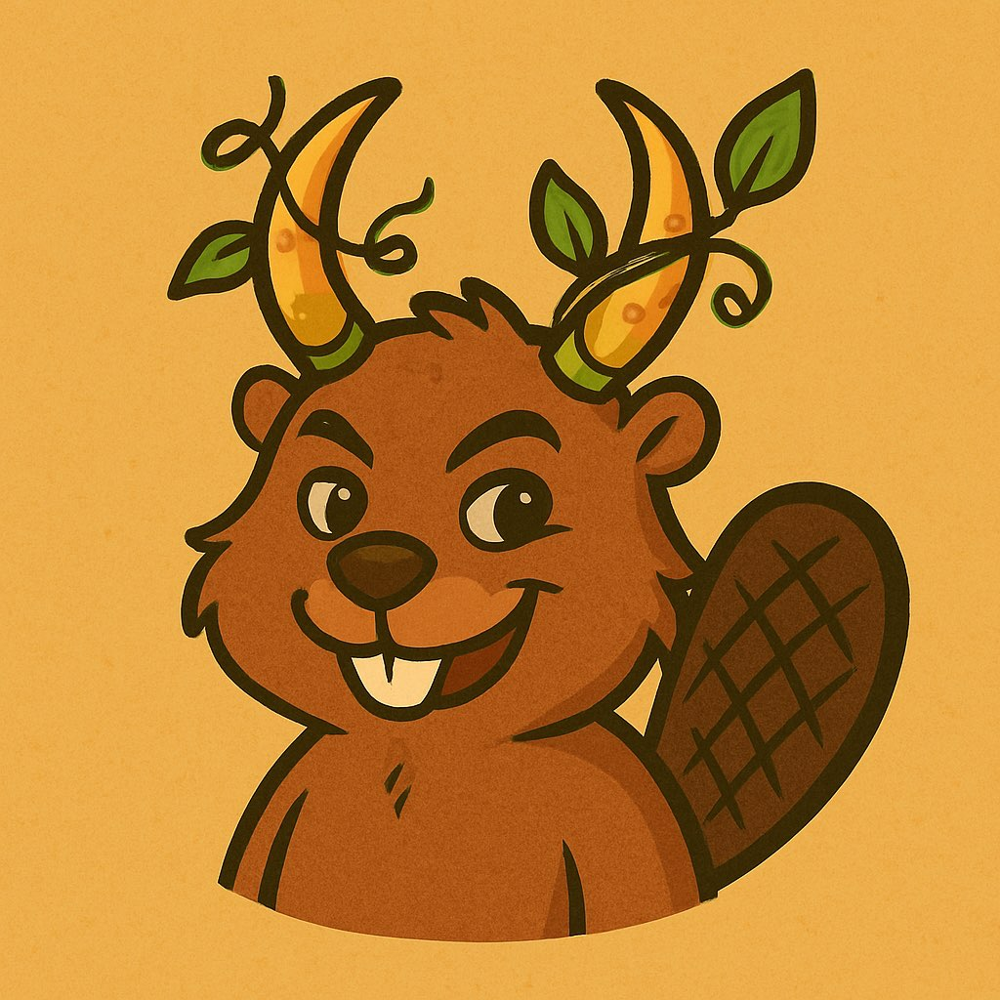

01 / Copy the text
Any coding agent

A text QR: use your QR reader to copy the prompt, then paste it into your agent.
A task for your coding agent
Choose an open request and give your agent the prompt below. It will research one species, build its record and open a pull request for review.
Get the prompt Download the QR PDF
Browse animal requests · Do 10 or keep going · Pick your favorites · GitHub repository
Paste this into a coding agent with repository and GitHub access. The same prompt is encoded in each version below.
Read the agent instructions and data-quality requirements. Source accuracy and actual preview results belong in the PR. Maintainers handle merging and live-scene acceptance.
01 / Copy the text
A text QR: use your QR reader to copy the prompt, then paste it into your agent.
02 / Open a composer

Opens Claude Code with the prompt. Sign in and connect the repository or your fork, then review and send.
03 / Open the installed app

Prefills the installed desktop app. Open your checkout or fork as a workspace, then review and send.
On a phone, or if the app link does not open, copy the prompt and use your usual Codex interface. Cloud setup guide.
Paste one block below after the original prompt, before sending it. You can also send it in the same conversation after your first species. These instructions work with any of the agent versions above.
Each species still needs its own evidence and PR. The count is review-ready PRs; maintainers decide when to merge and accept them into the live scene.
Continuous work lasts while the agent session can run. Closing the session or reaching a tool limit may interrupt it. To resume, reopen the workspace and send the original prompt, your chosen addendum and the saved progress checkpoint. The agent checks GitHub before continuing. These prompts do not install a scheduler or automatically restart a session.

Another prompt addendum
Put your favorite animals first. Add the template or one of the examples below after the original contribution prompt. You can combine it with do 10 or continuous mode.
Replace the animal group or place with your own. Use “only” for a strict filter, or name a fallback group when you want the agent to keep looking.
Replace [MY FAVORITE ANIMALS] before sending. The agent still checks claims and evidence for every task. A filter may match fewer than 10 available requests.
Copy one example as your selection addendum. Each works with the original prompt and either loop mode. These are example filters; the current issue queue determines what is available.
Combine: original prompt + loop instructions + favorite-animal filter.
The five-page PDF has one printable page per version, plus the repeat-work and Getting tricky addenda. The first three pages include the full prompt and repository URL. Every page has a small QR code that opens this guide.
Print at actual size on US Letter or use Fit on A4. Keep the white border around each code.
For a phone-friendly link to all versions, use the guide QR beside this text.

Claude Code uses its documented HTTPS link to fill the composer and suggest a connected GitHub repository. Repository selection is ignored when that repository is not connected; choose your fork if needed.
Codex uses its documented desktop app link to fill the composer. The repository hint matches an existing workspace; open or clone the repository first. App support depends on the device and QR reader. Both links leave you to review and send the prompt.
Link formats checked 24 October 2026. If a product changes its links, the text prompt remains available above.